Tutoriel Org (emacs org-mode)
Table des matières
Cette page est une traduction du tutoriel original de David O’Toole.
Dernière mise à jour: <10-07-2009>
Introduction
Org-mode est un gestionnaire d’informations personnelles pour Emacs. Il fonctionne avec Emacs. Ce document a pour but de donner au lecteur un aperçu de org-mode et de lui apprendre son usage élémentaire, avec des instructions pas-à-pas et beaucoup de copies d’écran. Il ne remplace pas le manuel (en anglais) et seul un sous-ensemble des fonctionnalités d’org-mode est décrit.
Ce document existe aussi en japonais, en chinois et en coréen. Un merci particulier aux traducteurs. Cette version française est une traduction de la version originale anglaise de David O’Toole.
Obtenir org-mode
Org-mode fait partie de Emacs 22 et Emacs 23, donc si vous avez une version moderne d’Emacs vous avez Org-mode.
Sinon, vous pouvez télécharger Org-mode depuis son site web, le
dépaqueter et faire pointer le load-path d’Emacs vers le répertoire où
se trouver Org-mode.
(add-to-list 'load-path "REPERTOIRE_OU_VOUS_AVEZ_DECOMPRESSE_ORGMODE/lisp")
Installation
Ajoutez les lignes suivantes à votre .emacs :
(require 'org) (define-key global-map "\C-cl" 'org-store-link) (define-key global-map "\C-ca" 'org-agenda) (setq org-log-done t)
Cela va assurer le chargement de org, et définir quelques raccourcis claviers globaux. Nous décrirons « org-store-link » et « org-agenda » plus loin dans ce document.
Encore une chose. Il est préférable de conserver vos fichiers org dans un répertoire à part. Je recommande d’utiliser ~/org.
Les bases
Cette section illustre l’usage élémentaire de org-mode en montrant comment j’ai utilisé org-mode pour créer ce document.
Créer un nouveau fichier
Si vous avez configuré votre fichier d’initialisation d’Emacs comme suggéré ci-dessus, Emacs devrait passer en mode org-mode dès que vous visitez ou créez un fichier dont l’extension est « .org ».
J’ai créé un nouveau fichier nommé « OrgTutorial.org » et vu l’indication « Org » dans la modeline, indiquant que nous sommes bien dans le mode org-mode.
Une simple liste de tâches
J’ai d’abord entré une titre de section appelé « Tasks » pour y placer les tâches. Ce n’est pas nécessaire mais c’est souvent pratique, surtout quand vous voulez garder la liste des tâches séparée du corps du document que vous écrivez.
Les titres de sections de premier niveau commencent avec un astérisque; ceux des sections de deuxième niveau avec deux astérisque, et ainsi de suite.
Dans org-mode, les entrées TODO sont toujours des titres de section. J’ai saisie une entrée TODO pour « Start new org file for tutorial. »
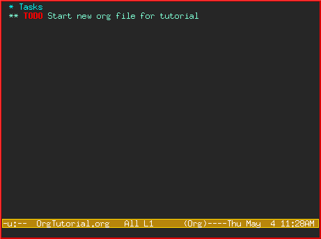
C’est un peu stupide, parce que nous avons déjà commencé un nouveau fichier. Disons donc qu’on va marquer cet élément TODO comme DONE en déplaçant le curseur sur cette ligne et en pressant C-c C-t, ce qui envoie la commande org-todo.
Voici le résultat :
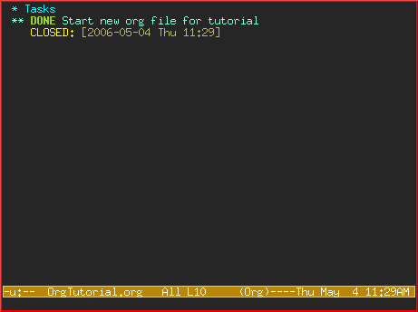
Remarquez comme org-mode utilise un marqueur temporel (« timestamp ») pour enregistrer le moment où un élément TODO a été achevé.
Ajoutons plus d’éléments TODO. Positionnez le curseur sur la ligne suivante et pressez M-shift-RET pour lancer org-insert-todo-heading. Vous pouvez presser le raccourci pour ajouter plusieurs TODOs.
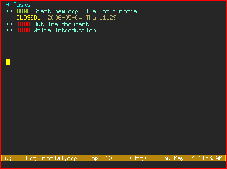
Utiliser plusieurs titres de sections pour structurer un document
Souvent, la meilleure façon d’organiser vos idées est d’en visualiser la structure. Ma prochaine étape consiste à mettre en relief les différents sujets de ce tutoriel. En faisant ça, vous divisez cette page blanche intimidante en morceaux plus petits qu’il devient plus facile de remplir.
Souvenez-vous qu’une section de premier niveau commence par un astérisque, et une section de deuxième niveau par deux astérisque. Si vous avez besoin d’une plus grande profondeur de niveau, allez-y, utilisez trois astérisque ou plus !
Voici à quoi ça ressemble une fois que j’ai fini de structurer le document :
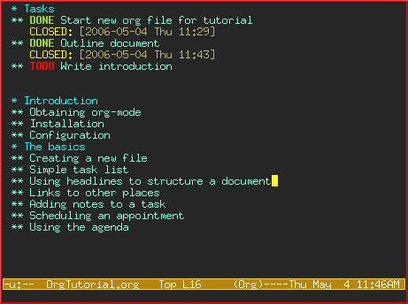
Remarquez que j’ai noté « Outline document » comme DONE une fois que j’ai fini.
Remplir les sections
Vous pouvez facilement ajouter le corps du texte sous les titres de section.
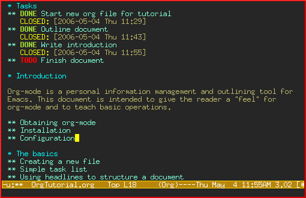
Les liens vers d’autres ressources
Dans la section sur « Obtaining Org-mode » j’ai besoin de créer un lien vers le site d’org-mode. Le lien se fait à l’aide d’une syntaxe spéciale utilisant les crochets droits :
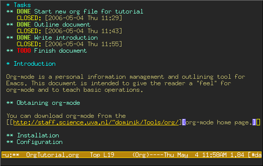
[[sec-1.2][description]]
Voyez comment j’ai d’abord saisi le lien et sa description, puis laissé ouvert le dernier crochet :
Ensuite je saisi le dernier crochet, le lien « disparaît » et seule la description apparaît.
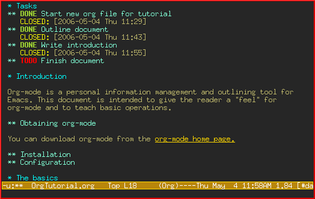
Essayez de déplacer le curseur au-dessus du lien et pressez C-c C-o pour org-open-at-point.
Vous pouvez aussi créer des liens vers des fichiers locaux. Essayez d’ouvrir un autre fichier - par exemple votre fichier de configuration d’Emacs. Pressez C-c l pour lancer la commande org-store-link. Vous verrez un message apparaître disant qu’un lien pointant vers l’emplacement courant dans le fichier a été enregistré.
Maintenant revenez à votre buffer org-mode et copiez le lien en utilisant C-c C-l pour lancer la commande org-insert-link. (Vous aurez peut-être besoin d’utiliser les flèches pour faire défiler les liens et trouver le bon.)
Survol d’un document
Désormais, mon document est en train de devenir plus long et ne peut plus tenir sur un seul écran. Org-mode vous permet facilement de survoler votre document en appuyant sur shift-TAB.
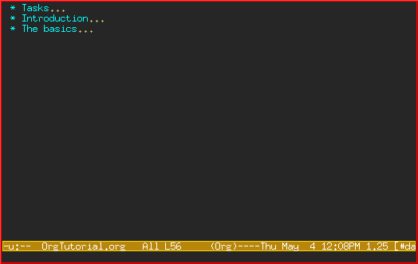
Notez que seules les sections de plus haut niveau apparaissent. Vous pouvez appuyer à nouveau sur shift-TAB pour voir toutes les sections, y compris les éléments TODO :
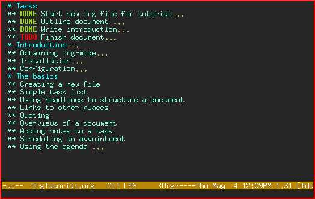
Appuyez encore pour retourner à l’affichage normal de votre document, avec le corps des sections apparents :
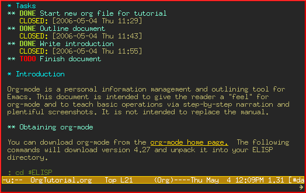
Ajouter une note à une tâche
Vous pouvez ajouter autant de texte que vous le voulez sous le titre d’un élément TODO. En fait, vous pouvez même avoir des sous-sections sous un TODO et des TODOs sous les TODOs !
La possibilité d’annoter les tâches permet de rassembler facilement les liens et réflexions associées à la tâche. La possibilité d’insérer des tâches dans les tâches est très pratique pour modéliser le suivi du travail – assez souvent, une grande tâche est divisée en sous-tâches plus petites que vous voulez pouvoir marquer comme « DONE » au fur et à mesure que vous les accomplissez.
Un avant-goût des fonctionnalités avancées
Avant de finir, nous allons toucher à la liste globale TODO, la planification et les fonctionnalités de l’agenda. Celles-ci sont utilisées pour arranger différents éléments TODO et les afficher par ordre de priorité et par ordre chronologique. Vous pouvez aussi vous en servir pour voir quelles tâches ont été accomplies, et quand.
Configuration
Vous devez d’abord définir la variable org-agenda-files de sorte qu’org-mode sache dans quels fichiers chercher pour les élements TODOs et les éléments planifiés.
Imaginons que vous avez déjà plusieurs fichiers org – disons un pour le travail (« work »), un pour la maison (« home ») et un pour l’école (« school »).
Ainsi vous ajouterez ceci dans votre fichier d’initialisation d’Emacs :
(setq org-agenda-files (list "~/org/work.org"
"~/org/school.org"
"~/org/home.org"))
La liste TODO globale
Pressez C-c a t pour entrer dans la liste globale TODO. Org-mode va scanner les fichiers de org-agenda-files et présenter une liste de tous les éléments TODO encore en cours :
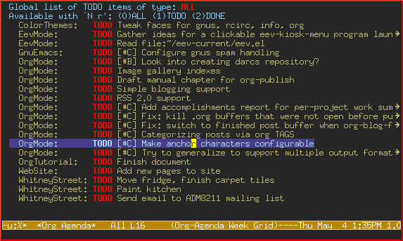
Vous pouvez déplacer le curseur entre les différents éléments TODO, et appuyer sur « t » pour marquer un élément comme DONE, ou bien RET pour ouvrir le fichier dans lequel cet élément se trouve.
Planifier des tâches et utiliser l’agenda
Disons que je veux planifier « Finish document » pour aujourd’hui. Je déplace le curseur jusqu’à la ligne contenant l’élément TODO « Finish document », et j’appuie sur C-c C-s pour lancer la commande org-schedule. Le calendrier surgit et je peux soit saisir la date, soit cliquer dessus :
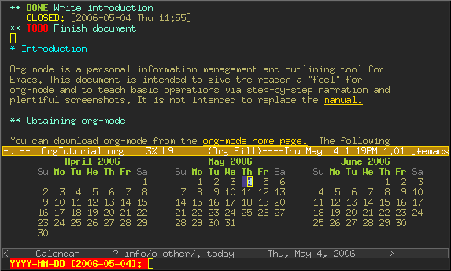
Une fois que je sélectionne la date, org-mode insère un marqueur temporel (« timestamp ») de planification après l’élément TODO :
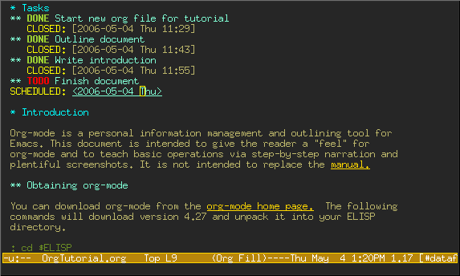
Maintenant sauvegardez votre fichier et pressez C-c a a pour org-agenda. Les éléments planifiés pour cette semaine s’affichent :
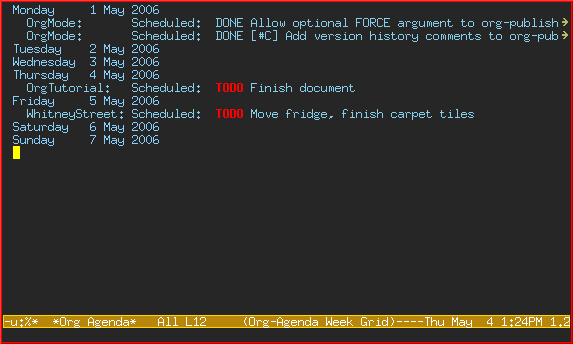
Maintenant appuyez sur « l » (L en bas-de-casse) pour afficher les journaux (« log »). Cela affiche toutes les tâches finies et la date à laquelle elle ont été achevées.
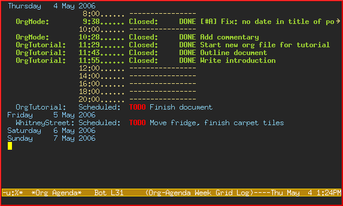
Adieu
Ce n’était qu’un petit aperçu de org-mode. Encore plus de réjouissances vous attendent dans le manuel en ligne d’org-mode.